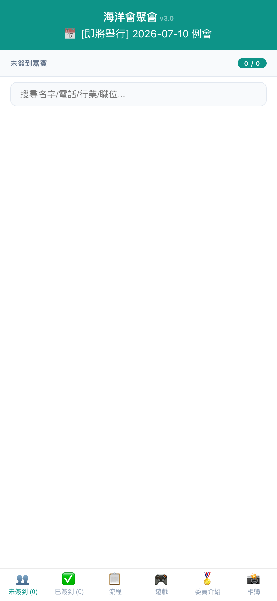
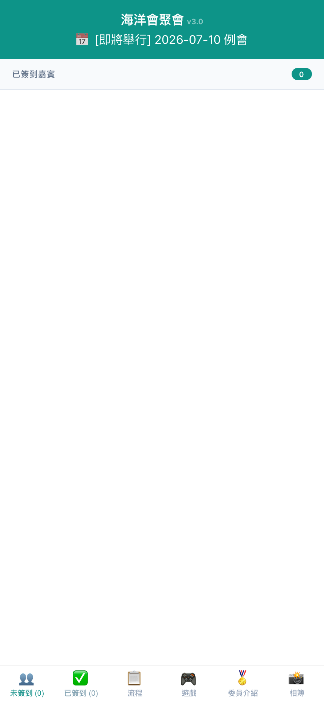
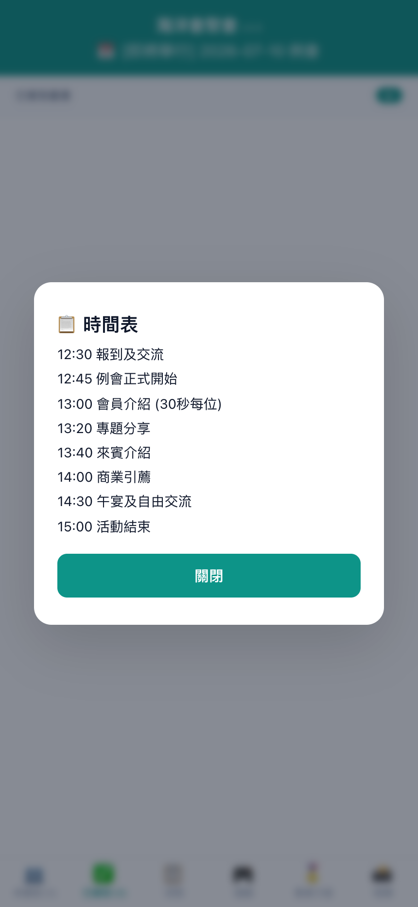
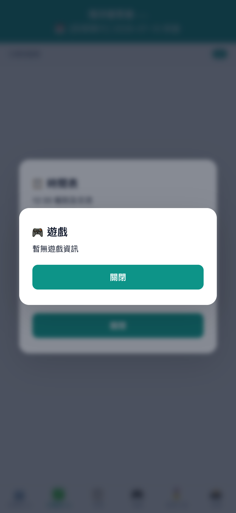
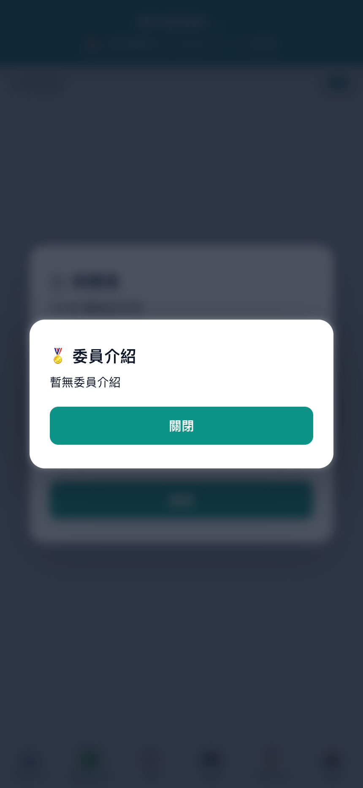
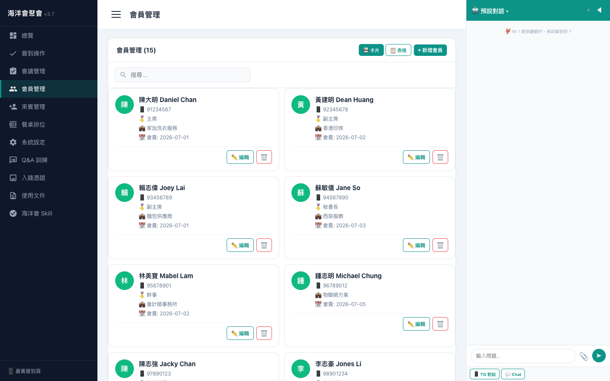

打開 fotan.techforliving.net，系統自動載入今日會議。底部有 6 個分頁：

| 分頁 | 功能 |
|---|---|
| 👥 未簽到 | 未簽到人員名單，頂部搜尋欄可搜姓名/電話/行業 |
| ✅ 已簽到 | 已簽到人員名單，顯示枱號 |
| 📋 流程 | 今日節目時間表 + 主席歡迎詞 |
| 🎮 遊戲 | 互動遊戲資訊 |
| 🏅 委員介紹 | 委員介紹內容 |
| 📸 相簿 | 活動相簿連結 |
| 方式 | 操作 |
|---|---|
| PayMe | 點擊 → 自動跳轉 PayMe App |
| Alipay HK | 點擊 → 顯示 QR Code 掃描 |
| FPS 轉數快 | 點擊 → 顯示 QR Code 或手動輸入電話 |
| 上傳收據 | 點擊 → 拍照/選取截圖 → 系統自動標記已付款 |
| 跳過簽到 | 直接完成簽到（需管理員啟用） |


📋 節目流程 — 今日時間表 + 主席歡迎詞

🎮 遊戲資訊

🏅 委員介紹 & 入會申請
前往 fotan.techforliving.net/admin，輸入管理員密碼。Session 24 小時有效。

登入後首頁顯示：



| 角色 | 收費 |
|---|---|
| 主席 / 副主席 | $220 |
| 秘書長 / 幹事 | $220 |
| 會員 | $398 |

| 類型 | 收費 |
|---|---|
| ⭐ VIP 嘉賓 | 免費 |
| 👥 來賓 | $398 |

基本操作：
進階功能：

| 類別 | 設定項目 |
|---|---|
| 基本 | 午餐費用、主席訊息、關於我們 |
| 簽到 | 直接簽到開關、簽到說明文字 |
| 付款 | PayMe 連結、FPS 電話、QR 碼 |
| 內容 | 節目流程表、遊戲資訊、委員介紹、相簿連結 |
| 通訊 | WhatsApp 提醒範本、Telegram Bot |
| 安全 | 密碼變更、API Token 管理 |
| 資料 | 完整資料庫 JSON 備份下載 |
右下角折疊面板，用粵語對話操作系統：
支援上傳圖片自動 OCR 辨識。
系統要求先付款。可透過 PayMe/Alipay/FPS 付款，或由管理員標記「免費」。
管理員在「系統設定」→ 開啟「直接簽到」（skipCheckin:"1"）。
可以。管理員在簽到操作頁面刪除該 attendance 記錄。
重新整理簽到頁面即可同步。
iOS Safari → 分享 → 加到主畫面。Android Chrome → 選單 → 安裝應用程式。
需透過 Cloudflare Dashboard 或直接查 D1 settings.admin_password。
無上限，Cloudflare Edge 全球加速。
| 網址 | 用途 |
|---|---|
fotan.techforliving.net | 來賓簽到頁面 |
fotan.techforliving.net/admin | 管理後台 |
fotan.techforliving.net/api/doc | API 文件 |
fotan.techforliving.net/docs/ | 使用文件目錄 |
火炭會聚會簽到系統 v3.14 · 文件產生於 2026-06-30